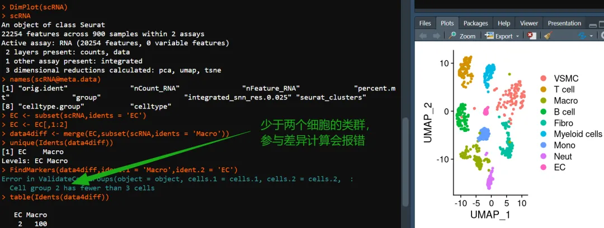
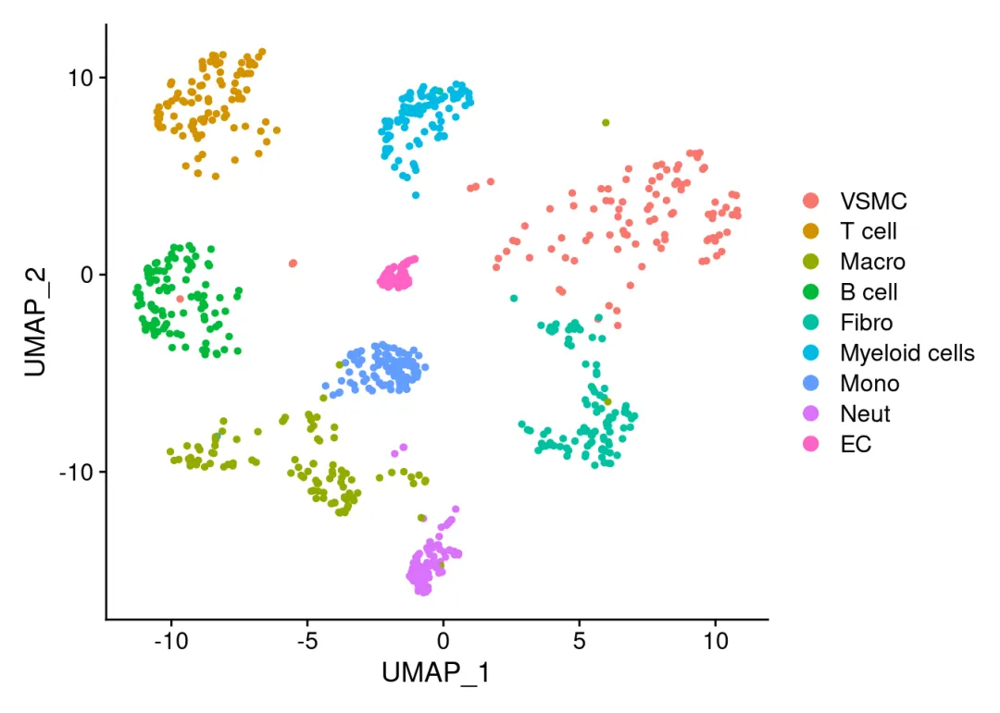
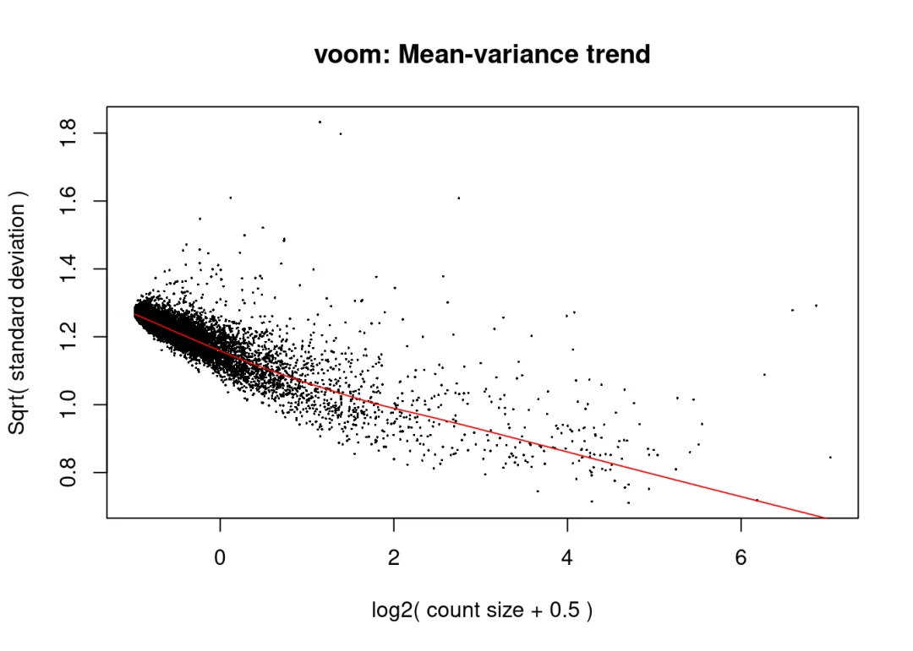
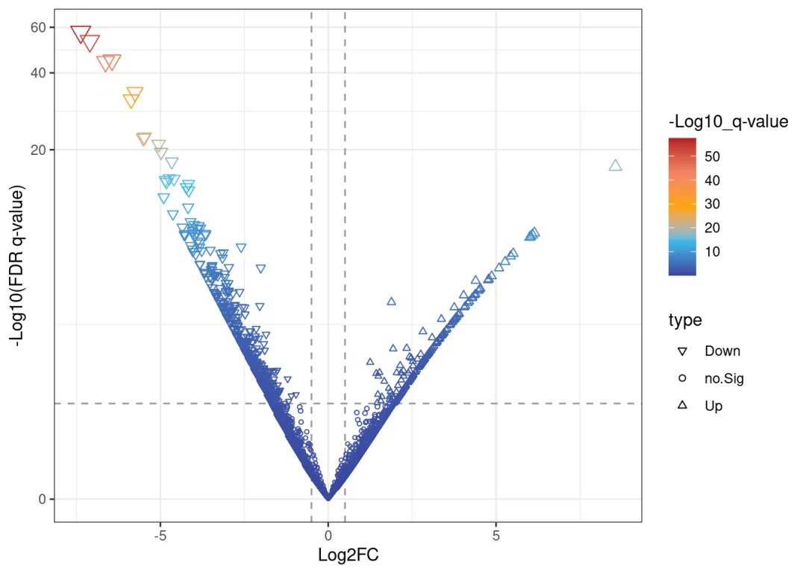
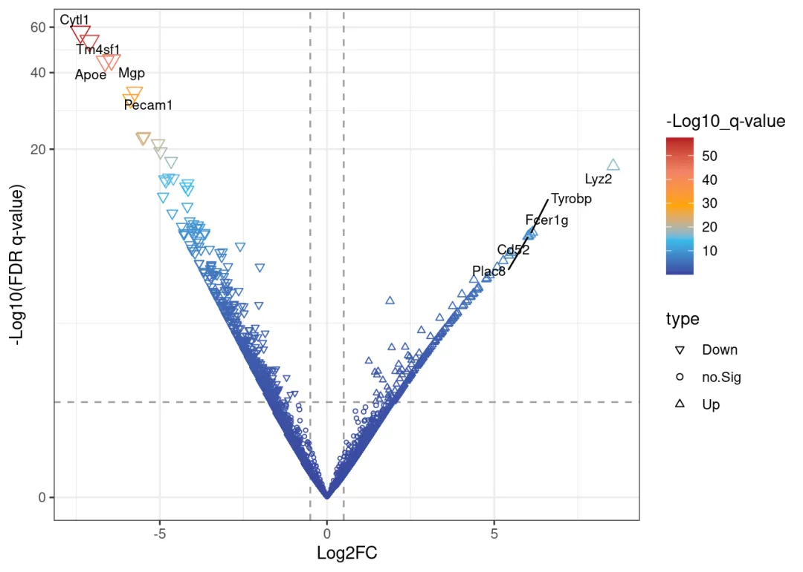
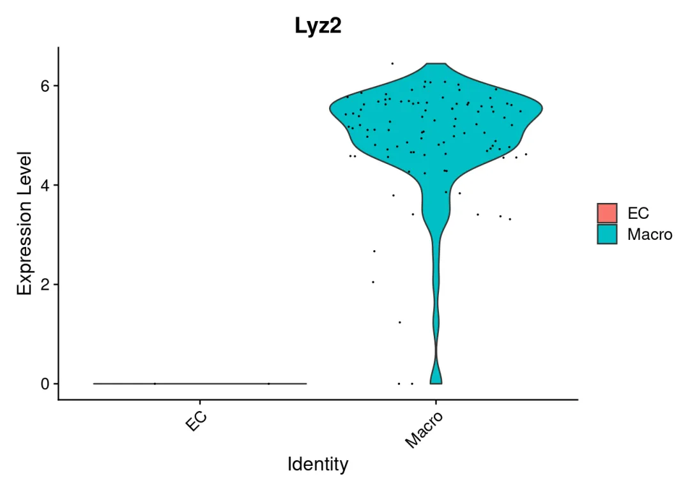

不足3个细胞怎么做差异分析？
原文：https://mp.weixin.qq.com/s?__biz=MzAwMzIzOTk5OQ==&mid=2247530311&idx=1&sn=3cfbe93216b11c76923f326dd7b44439&chksm=9b3c0e17ac4b8701e1af4b7197600f23f02c6c06a6f299e58d1b9adb2888f89790ece848c126#rd 合集：答读者问
一、写在前面
如图，有粉丝发现，当差异基因时存在细胞类型不足三个细胞，则会出现报错。解决方法自然是有的，我们此前分享的应审稿人要求| pseudo bulk差异分析便可解决这一问题。只是，为何要强求这一两个细胞的分析？做出的差异结果可信度大大的存疑，后续的验证也只怕是难上加难，不如及时止损。系统性单细胞教程可见：scRNA-seq，从小白到文献复现大神！

二、重现报错
这里的测试数据来自经典教案，多样本整合
1、构建模拟数据
# 加载包：
library(Seurat)
## Loading required package: SeuratObject
## Loading required package: sp
## 'SeuratObject' was built with package 'Matrix' 1.7.1 but the current
## version is 1.7.2; it is recomended that you reinstall 'SeuratObject' as
## the ABI for 'Matrix' may have changed
##
## Attaching package: 'SeuratObject'
## The following objects are masked from 'package:base':
##
## intersect, t
# 读取数据：
scRNA <-readRDS('./pbmcrenamed.rds')
# 查看包含细胞类型：
DimPlot(scRNA)

# 取出EC：
EC <-subset(scRNA,idents ='EC')
# 保留两个EC
EC <- EC[,1:2]
# 整合EC与Macro
data4diff <-merge(EC,subset(scRNA,idents ='Macro'))
# 此时我们就获得了包含EC、Macro的单细胞对象，其中EC的数量只有两个：
table(Idents(data4diff))
##
## EC Macro
## 2 100
2、查看报错
其实是我还挣扎过，尝试更改FindMarkers函数的test.use的参数来规避这个问题。事实上，这种情况下无论你采用什么内置差异分析算法，都会报Cell group 2 has fewer than 3 cells的错误，应该是ValidateCellGroups的底层逻辑了。
try({FindMarkers(data4diff,ident.1 ='Macro',ident.2 ='EC')})
## Error in ValidateCellGroups(object = object, cells.1 = cells.1, cells.2 = cells.2, :
## Cell group 2 has fewer than 3 cells
try({FindMarkers(data4diff,ident.1 ='Macro',ident.2 ='EC',test.use ='wilcox')})
## Error in ValidateCellGroups(object = object, cells.1 = cells.1, cells.2 = cells.2, :
## Cell group 2 has fewer than 3 cells
try({FindMarkers(data4diff,ident.1 ='Macro',ident.2 ='EC',test.use ='wilcox_limma')})
## Error in ValidateCellGroups(object = object, cells.1 = cells.1, cells.2 = cells.2, :
## Cell group 2 has fewer than 3 cells
try({FindMarkers(data4diff,ident.1 ='Macro',ident.2 ='EC',test.use ='bimod')})
## Error in ValidateCellGroups(object = object, cells.1 = cells.1, cells.2 = cells.2, :
## Cell group 2 has fewer than 3 cells
try({FindMarkers(data4diff,ident.1 ='Macro',ident.2 ='EC',test.use ='roc')})
## Error in ValidateCellGroups(object = object, cells.1 = cells.1, cells.2 = cells.2, :
## Cell group 2 has fewer than 3 cells
try({FindMarkers(data4diff,ident.1 ='Macro',ident.2 ='EC',test.use ='t')})
## Error in ValidateCellGroups(object = object, cells.1 = cells.1, cells.2 = cells.2, :
## Cell group 2 has fewer than 3 cells
try({FindMarkers(data4diff,ident.1 ='Macro',ident.2 ='EC',test.use ='negbinom')})
## Error in ValidateCellGroups(object = object, cells.1 = cells.1, cells.2 = cells.2, :
## Cell group 2 has fewer than 3 cells
try({FindMarkers(data4diff,ident.1 ='Macro',ident.2 ='EC',test.use ='poisson')})
## Error in ValidateCellGroups(object = object, cells.1 = cells.1, cells.2 = cells.2, :
## Cell group 2 has fewer than 3 cells
try({FindMarkers(data4diff,ident.1 ='Macro',ident.2 ='EC',test.use ='LR')})
## Error in ValidateCellGroups(object = object, cells.1 = cells.1, cells.2 = cells.2, :
## Cell group 2 has fewer than 3 cells
三、解决问题
3.1 Seurat的伪bulk方案
### 生成拟bulk RNA数据 ###
bulk <-AggregateExpression(scRNA, return.seurat = T, slot ="counts", assays ="RNA",
group.by =c("celltype", # 细胞类型对应的注释
"orig.ident", # 样本对应的注释
"group")# 分组变量对应的注释
)
## Centering and scaling data matrix
# 生成的是一个新的Seurat对象
bulk
## An object of class Seurat
## 20254 features across 26 samples within 1 assay
## Active assay: RNA (20254 features, 0 variable features)
## 3 layers present: counts, data, scale.data
# 下面的额计算依赖DESeq2，做过Bulk RNA-Seq的同学都知道：
if(!require(DESeq2))BiocManager::install('DESeq2')
## Loading required package: DESeq2
## Loading required package: S4Vectors
## Loading required package: stats4
## Loading required package: BiocGenerics
##
## Attaching package: 'BiocGenerics'
## The following object is masked from 'package:SeuratObject':
##
## intersect
## The following objects are masked from 'package:stats':
##
## IQR, mad, sd, var, xtabs
## The following objects are masked from 'package:base':
##
## anyDuplicated, aperm, append, as.data.frame, basename, cbind,
## colnames, dirname, do.call, duplicated, eval, evalq, Filter, Find,
## get, grep, grepl, intersect, is.unsorted, lapply, Map, mapply,
## match, mget, order, paste, pmax, pmax.int, pmin, pmin.int,
## Position, rank, rbind, Reduce, rownames, sapply, saveRDS, setdiff,
## table, tapply, union, unique, unsplit, which.max, which.min
##
## Attaching package: 'S4Vectors'
## The following object is masked from 'package:utils':
##
## findMatches
## The following objects are masked from 'package:base':
##
## expand.grid, I, unname
## Loading required package: IRanges
##
## Attaching package: 'IRanges'
## The following object is masked from 'package:sp':
##
## %over%
## Loading required package: GenomicRanges
## Loading required package: GenomeInfoDb
## Loading required package: SummarizedExperiment
## Loading required package: MatrixGenerics
## Loading required package: matrixStats
##
## Attaching package: 'MatrixGenerics'
## The following objects are masked from 'package:matrixStats':
##
## colAlls, colAnyNAs, colAnys, colAvgsPerRowSet, colCollapse,
## colCounts, colCummaxs, colCummins, colCumprods, colCumsums,
## colDiffs, colIQRDiffs, colIQRs, colLogSumExps, colMadDiffs,
## colMads, colMaxs, colMeans2, colMedians, colMins, colOrderStats,
## colProds, colQuantiles, colRanges, colRanks, colSdDiffs, colSds,
## colSums2, colTabulates, colVarDiffs, colVars, colWeightedMads,
## colWeightedMeans, colWeightedMedians, colWeightedSds,
## colWeightedVars, rowAlls, rowAnyNAs, rowAnys, rowAvgsPerColSet,
## rowCollapse, rowCounts, rowCummaxs, rowCummins, rowCumprods,
## rowCumsums, rowDiffs, rowIQRDiffs, rowIQRs, rowLogSumExps,
## rowMadDiffs, rowMads, rowMaxs, rowMeans2, rowMedians, rowMins,
## rowOrderStats, rowProds, rowQuantiles, rowRanges, rowRanks,
## rowSdDiffs, rowSds, rowSums2, rowTabulates, rowVarDiffs, rowVars,
## rowWeightedMads, rowWeightedMeans, rowWeightedMedians,
## rowWeightedSds, rowWeightedVars
## Loading required package: Biobase
## Welcome to Bioconductor
##
## Vignettes contain introductory material; view with
## 'browseVignettes()'. To cite Bioconductor, see
## 'citation("Biobase")', and for packages 'citation("pkgname")'.
##
## Attaching package: 'Biobase'
## The following object is masked from 'package:MatrixGenerics':
##
## rowMedians
## The following objects are masked from 'package:matrixStats':
##
## anyMissing, rowMedians
##
## Attaching package: 'SummarizedExperiment'
## The following object is masked from 'package:Seurat':
##
## Assays
## The following object is masked from 'package:SeuratObject':
##
## Assays
Idents(bulk) <-'celltype'
bulk_deg <-FindMarkers(bulk,
ident.1 ="Macro", ident.2 ="EC", # 这样算出来的Fold Change就是Macro/EC
slot ="counts", test.use ="DESeq2",# 这里可以选择其它算法
verbose = F# 关闭进度提示
)
## converting counts to integer mode
## gene-wise dispersion estimates
## mean-dispersion relationship
## final dispersion estimates
head(bulk_deg)# 看一下差异列表
## p_val avg_log2FC pct.1 pct.2 p_val_adj
## Lyz2 1.319068e-167 8.390904 1.000 1 2.671640e-163
## Pecam1 1.676724e-48 -5.088600 1.000 1 3.396037e-44
## Fabp4 7.472478e-46 -6.226709 0.667 1 1.513476e-41
## Tyrobp 5.513580e-45 5.530070 1.000 1 1.116720e-40
## Cytl1 3.912488e-34 -6.691938 0.667 1 7.924352e-30
## Cd52 1.527090e-33 5.216027 1.000 1 3.092968e-29
3.2 生成bulk矩阵
当然我们也可以把sc直接变成Bulk矩阵，然后直接用Bulk RNASeq| 转录组实战里经典的差异分析方法即可完成。
library(dplyr)
##
## Attaching package: 'dplyr'
## The following object is masked from 'package:Biobase':
##
## combine
## The following object is masked from 'package:matrixStats':
##
## count
## The following objects are masked from 'package:GenomicRanges':
##
## intersect, setdiff, union
## The following object is masked from 'package:GenomeInfoDb':
##
## intersect
## The following objects are masked from 'package:IRanges':
##
## collapse, desc, intersect, setdiff, slice, union
## The following objects are masked from 'package:S4Vectors':
##
## first, intersect, rename, setdiff, setequal, union
## The following objects are masked from 'package:BiocGenerics':
##
## combine, intersect, setdiff, union
## The following objects are masked from 'package:stats':
##
## filter, lag
## The following objects are masked from 'package:base':
##
## intersect, setdiff, setequal, union
# 获取countss数据：
rna_count <-GetAssayData(data4diff,'RNA','count') %>%as.data.frame()
# 得到的数据是一个列名是细胞barcode名(现在应该叫做样本名)，行名是基因名的矩阵
rna_count[1:4,1:4]
## AACCCAAAGGCCTTGC-1_1 AAGACTCAGGCTCACC-1_1 GATGTTGGTGACAGGT-1_1
## Xkr4 0 0 0
## Gm19938 0 0 0
## Sox17 1 14 0
## Gm37587 0 0 0
## GCCTGTTAGAGCTTTC-1_1
## Xkr4 0
## Gm19938 0
## Sox17 0
## Gm37587 0
# 构建分组信息：
group_info <-data.frame(sample =colnames(rna_count),
group = data4diff$celltype)
# 查看整理好的分组信息：
group_info
## sample group
## AACCCAAAGGCCTTGC-1_1 AACCCAAAGGCCTTGC-1_1 EC
## AAGACTCAGGCTCACC-1_1 AAGACTCAGGCTCACC-1_1 EC
## GATGTTGGTGACAGGT-1_1 GATGTTGGTGACAGGT-1_1 Macro
## GCCTGTTAGAGCTTTC-1_1 GCCTGTTAGAGCTTTC-1_1 Macro
## TACTTGTGTAGAGACC-1_1 TACTTGTGTAGAGACC-1_1 Macro
## AAAGTCCCAAGCTCTA-1_2 AAAGTCCCAAGCTCTA-1_2 Macro
## AACCTTTGTGTGACCC-1_2 AACCTTTGTGTGACCC-1_2 Macro
## ACATTTCAGGGTGAGG-1_2 ACATTTCAGGGTGAGG-1_2 Macro
## ACGGTTAGTTGAATCC-1_2 ACGGTTAGTTGAATCC-1_2 Macro
# 安装和加载必要的包：
if(!require(limma))BiocManager::install("limma")
## Loading required package: limma
##
## Attaching package: 'limma'
## The following object is masked from 'package:DESeq2':
##
## plotMA
## The following object is masked from 'package:BiocGenerics':
##
## plotMA
# 设置因子的水平，保证后续求出的fold change是Macro vs EC的结果：
group_info$group <-factor(group_info$group, levels=c("EC", "Macro"))
# 使用voom转换count数据：
v <-voom(rna_count[,group_info$sample], plot=TRUE, design=model.matrix(~ group_info$group))

# 创建设计矩阵
design <-model.matrix(~ group_info$group)
# 拟合线性模型
fit <-lmFit(v, design)
# 应用经验贝叶斯方法
fit <-eBayes(fit)
# 获取差异表达结果
results <-topTable(fit, adjust="BH", sort.by="P", number=Inf)
## Removing intercept from test coefficients
# 查看差异计算结果：
head(results)
## logFC AveExpr t P.Value adj.P.Val B
## Cytl1 -7.373118 6.217164 -16.08714 3.166532e-58 6.413494e-54 120.39129
## Tm4sf1 -7.100361 6.313693 -15.44600 8.084909e-54 8.187587e-50 110.46178
## Mgp -6.442328 7.011167 -14.15988 1.630966e-45 1.101120e-41 91.80967
## Apoe -6.635193 6.164305 -14.06780 6.019744e-45 3.048097e-41 90.43574
## Pecam1 -5.754467 6.615233 -12.22598 2.264653e-34 9.173657e-31 66.70513
## Bgn -5.872551 6.342975 -11.82165 3.024253e-32 1.020887e-28 61.83869
######## 火山图 ##########
data <-data.frame(gene =row.names(results),
pval =-log10(results$P.Value), #pval已做-log10处理
lfc = results$logFC)
# 查看数据：
head(data)
## gene pval lfc
## 1 Cytl1 57.49942 -7.373118
## 2 Tm4sf1 53.09232 -7.100361
## 3 Mgp 44.78755 -6.442328
## 4 Apoe 44.22042 -6.635193
## 5 Pecam1 33.64500 -5.754467
## 6 Bgn 31.51938 -5.872551
# pval 小于0.05，且上下调log(Fold change)大于0.5(差异倍数为1.41)的为显著差异基因并标注上下调，其余
data <-mutate(data, type =case_when(data$lfc >0.5& data$pval >abs(log10(0.05)) ~"Up",
data$lfc <-0.5& data$pval >abs(log10(0.05)) ~"Down",
data$pval <abs(log10(0.05)) ~"no.Sig"))
# 去除包含na的数据
data <-na.omit(data)
# 通过ggplot定义火山图
if(!require(ggplot2))install.packages('ggplot2')
## Loading required package: ggplot2
myplot <-ggplot(data,aes(lfc, pval))+# 横坐标为差异倍数，纵坐标为显著性
# 横向水平参考线：
geom_hline(yintercept =-log10(0.05), linetype ="dashed", color ="#999999")+
# 纵向垂直参考线：
geom_vline(xintercept =c(-0.5,0.5), linetype ="dashed", color ="#999999")+
# 散点图:
geom_point(aes(size=pval, shape=type,color= pval))+
# 指定颜色渐变模式：
scale_shape_manual(values =c(6,1,2))+
scale_color_gradientn(values =seq(0,1,0.2),
colors =c("#39489f","#39bbec",'#FFA500',"#f38466","#b81f25"))+
# 指定散点大小渐变模式：
scale_size_continuous(range =c(0.5,4))+
# 主题调整：
theme_bw()+
guides(col =guide_colourbar(title ="-Log10_q-value"),
size ="none")+
xlab("Log2FC")+
ylab("-Log10(FDR q-value)")+
scale_y_continuous(trans ="log1p")
# 这时的火山图还是光秃秃的：
print(myplot)

# 过滤上下调top5的基因：
top_m <- data %>%group_by(type) %>%top_n(n =5, wt = pval) %>%# 如果你想改成top10，把5替换成对应的数字就好
filter(type !='no.Sig')
# 把top标签添加到火山图中
if(!require(ggrepel))install.packages('ggrepel')
## Loading required package: ggrepel
myplot <- myplot +
geom_text_repel(data=top_m,aes(x=lfc,y=pval,label=gene), size =3)
# 查看最终的火山图，这时标签已经被添加好啦：
print(myplot)

# 挑一个差异看起来比较大的基因，在单细胞里检查一番：
VlnPlot(data4diff,features ='Lyz2')

虽然是给大家捣鼓出来了，Lyz2的差异还是很明显的，确实是巨噬细胞的marker，不过火山图还是有些奇怪的。还是劝大家及时止损，这两三个细胞的，不研究也罢。
四、文件下载
一切不给测试文件和分析环境版本的教程都是耍流氓，本推送的代码和测试文件可以在以下链接中下载：
通过网盘分享的文件：不足3个的单细胞如何做差异分析
链接: https://pan.baidu.com/s/1B8H6eZR-rjIOe4BPe2rdYg?pwd=86nt
提取码: 86nt
分析环境：
-
-
-
-
-
-
-
-
-
-
-
-
-
-
-
-
-
-
-
-
-
-
-
-
-
-
-
-
-
-
-
-
-
-
-
-
-
-
-
-
-
-
-
-
-
-
-
-
-
-
-
-
-
-
-
-
-
-
-
-
-
-
-
-
-
-
-
-
-
-
-
-
-
-
-
-
-
-
-
-
-
-
-
- *
-
-
-
-
-
-
-
-
-
-
-
-
-
-
-
-
-
-
-
-
-
-
-
-
-
-
-
-
-
-
-
-
-
-
-
-
-
-
-
-
-
-
-
-
-
-
-
-
-
-
-
-
-
-
-
-
-
-
-
-
-
-
-
-
-
-
-
-
-
-
-
-
-
-
-
-
-
-
-
-
-
-
sessionInfo()## R version 4.4.2 (2024-10-31)## Platform: x86_64-pc-linux-gnu## Running under: Ubuntu 20.04.4 LTS## ## Matrix products: default## BLAS: /usr/lib/x86_64-linux-gnu/openblas-pthread/libblas.so.3 ## LAPACK: /usr/lib/x86_64-linux-gnu/openblas-pthread/liblapack.so.3; LAPACK version 3.9.0## ## locale:## [1] LC_CTYPE=en_US.UTF-8 LC_NUMERIC=C ## [3] LC_TIME=en_US.UTF-8 LC_COLLATE=en_US.UTF-8 ## [5] LC_MONETARY=en_US.UTF-8 LC_MESSAGES=en_US.UTF-8 ## [7] LC_PAPER=en_US.UTF-8 LC_NAME=C ## [9] LC_ADDRESS=C LC_TELEPHONE=C ## [11] LC_MEASUREMENT=en_US.UTF-8 LC_IDENTIFICATION=C ## ## time zone: Etc/UTC## tzcode source: system (glibc)## ## attached base packages:## [1] stats4 stats graphics grDevices utils datasets methods ## [8] base ## ## other attached packages:## [1] ggrepel_0.9.6 ggplot2_3.5.1 ## [3] limma_3.62.2 dplyr_1.1.4 ## [5] DESeq2_1.36.0 SummarizedExperiment_1.36.0## [7] Biobase_2.66.0 MatrixGenerics_1.18.1 ## [9] matrixStats_1.5.0 GenomicRanges_1.58.0 ## [11] GenomeInfoDb_1.42.1 IRanges_2.40.1 ## [13] S4Vectors_0.44.0 BiocGenerics_0.52.0 ## [15] Seurat_5.2.1 SeuratObject_5.0.2 ## [17] sp_2.2-0 ## ## loaded via a namespace (and not attached):## [1] RcppAnnoy_0.0.22 splines_4.4.2 later_1.4.1 ## [4] bitops_1.0-9 tibble_3.2.1 polyclip_1.10-7 ## [7] XML_3.99-0.18 fastDummies_1.7.5 lifecycle_1.0.4 ## [10] globals_0.16.3 lattice_0.22-6 MASS_7.3-64 ## [13] magrittr_2.0.3 plotly_4.10.4 sass_0.4.9 ## [16] rmarkdown_2.29 jquerylib_0.1.4 yaml_2.3.10 ## [19] httpuv_1.6.15 sctransform_0.4.1 spam_2.11-1 ## [22] spatstat.sparse_3.1-0 reticulate_1.40.0 cowplot_1.1.3 ## [25] pbapply_1.7-2 DBI_1.2.3 RColorBrewer_1.1-3 ## [28] abind_1.4-8 zlibbioc_1.52.0 Rtsne_0.17 ## [31] purrr_1.0.2 RCurl_1.98-1.16 GenomeInfoDbData_1.2.13## [34] irlba_2.3.5.1 listenv_0.9.1 spatstat.utils_3.1-4 ## [37] genefilter_1.84.0 openintro_2.5.0 airports_0.1.0 ## [40] goftest_1.2-3 RSpectra_0.16-2 spatstat.random_3.4-1 ## [43] annotate_1.84.0 fitdistrplus_1.2-2 parallelly_1.42.0 ## [46] codetools_0.2-20 DelayedArray_0.32.0 tidyselect_1.2.1 ## [49] UCSC.utils_1.2.0 farver_2.1.2 spatstat.explore_3.4-3 ## [52] jsonlite_1.8.9 progressr_0.15.1 ggridges_0.5.6 ## [55] survival_3.8-3 tools_4.4.2 ica_1.0-3 ## [58] Rcpp_1.0.14 glue_1.8.0 gridExtra_2.3 ## [61] SparseArray_1.6.0 xfun_0.50 withr_3.0.2 ## [64] fastmap_1.2.0 digest_0.6.37 R6_2.5.1 ## [67] mime_0.12 colorspace_2.1-1 scattermore_1.2 ## [70] tensor_1.5 spatstat.data_3.1-6 RSQLite_2.3.9 ## [73] tidyr_1.3.1 generics_0.1.3 data.table_1.16.4 ## [76] usdata_0.3.1 httr_1.4.7 htmlwidgets_1.6.4 ## [79] S4Arrays_1.6.0 uwot_0.2.2 pkgconfig_2.0.3 ## [82] gtable_0.3.6 blob_1.2.4 lmtest_0.9-40 ## [85] XVector_0.46.0 htmltools_0.5.8.1 geneplotter_1.84.0 ## [88] dotCall64_1.2 scales_1.3.0 png_0.1-8 ## [91] spatstat.univar_3.1-3 knitr_1.49 rstudioapi_0.17.1 ## [94] tzdb_0.4.0 reshape2_1.4.4 nlme_3.1-168 ## [97] cachem_1.1.0 zoo_1.8-12 stringr_1.5.1 ## [100] KernSmooth_2.23-26 vipor_0.4.7 parallel_4.4.2 ## [103] miniUI_0.1.1.1 AnnotationDbi_1.68.0 ggrastr_1.0.2 ## [106] pillar_1.10.1 grid_4.4.2 vctrs_0.6.5 ## [109] RANN_2.6.2 promises_1.3.2 xtable_1.8-4 ## [112] cluster_2.1.8 beeswarm_0.4.0 evaluate_1.0.3 ## [115] readr_2.1.5 locfit_1.5-9.11 cli_3.6.3 ## [118] compiler_4.4.2 rlang_1.1.5 crayon_1.5.3 ## [121] future.apply_1.11.3 labeling_0.4.3 ggbeeswarm_0.7.2 ## [124] plyr_1.8.9 stringi_1.8.4 viridisLite_0.4.2 ## [127] deldir_2.0-4 BiocParallel_1.40.0 munsell_0.5.1 ## [130] Biostrings_2.74.1 lazyeval_0.2.2 spatstat.geom_3.4-1 ## [133] Matrix_1.7-2 RcppHNSW_0.6.0 hms_1.1.3 ## [136] patchwork_1.3.0 bit64_4.6.0-1 future_1.34.0 ## [139] statmod_1.5.0 KEGGREST_1.46.0 shiny_1.10.0 ## [142] ROCR_1.0-11 igraph_2.1.4 memoise_2.0.1 ## [145] bslib_0.9.0 bit_4.5.0.1 cherryblossom_0.1.0

如何联系我们

 留一个领取资料、开箱即用的单细胞分析镜像的微信号[Biomamba_zhushou]，方便各位随时交流。同时我们也构建了交流群矩阵，欢迎大家入群讨论。
大家可以阅读完这几篇之后添加给生信入门初学者的小贴士
没有检索，就没有发言权
留一个领取资料、开箱即用的单细胞分析镜像的微信号[Biomamba_zhushou]，方便各位随时交流。同时我们也构建了交流群矩阵，欢迎大家入群讨论。
大家可以阅读完这几篇之后添加给生信入门初学者的小贴士
没有检索，就没有发言权
已有生信基地联系方式的同学无需重复添加

 您点的每个赞和在看，我都认真当成了喜欢
您点的每个赞和在看，我都认真当成了喜欢